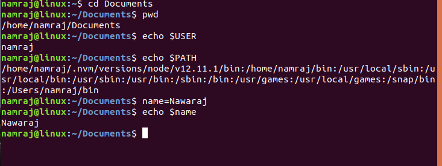
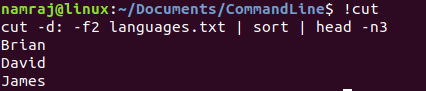
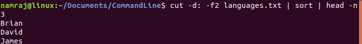
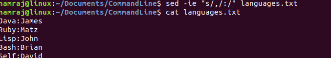
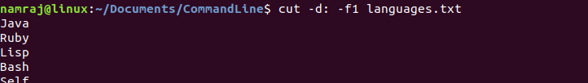

Examples of some commands used frequently and their usage.
$ ps aux | grep -i apt
This command selects process related to apt program in case insensitive way.
$ sudo kill -9 6974
This command kills process with process Id of 6974 forcefully
$ sudo killall apt apt-get
This command kills all processes with process associated with apt and apt-get.
$ apt search sublime-text
$ apt-cache search sublime-text
This searches for sublime-text using apt.
$ sudo apt update
This updates the apt repository.
$timedatectl status
This line shows unversal time UTC and GMT time zones.
This list section 5 of man page for passwd man 5 passwd
Passwd file is located in /etc/passwd helds info related to User :
avahi:x:116:122:Avahi mDNS daemon,,,:/var/run/avahi-daemon:/usr/sbin/nologin colord:x:117:123:colord colour management daemon,,,:/var/lib/colord:/usr/sbin/nologin hplip:x:118:7:HPLIP system user,,,:/var/run/hplip:/bin/false geoclue:x:119:124::/var/lib/geoclue:/usr/sbin/nologin gnome-initial-setup:x:120:65534::/run/gnome-initial-setup/:/bin/false gdm:x:121:125:Gnome Display Manager:/var/lib/gdm3:/bin/false namraj:x:1000:1000:Namraj,,,:/home/namraj:/bin/bash nava:x:1001:1001:Nava,,,:/home/nava:/bin/bash _chrony:x:122:126:Chrony daemon,,,:/var/lib/chrony:/usr/sbin/nologin mysql:x:123:127:MySQL Server,,,:/nonexistent:/bin/false
Some Commands
Environment varaiable
Environment varaiable are declared like name=Namraj but when invoked $ sign is required.
Last command
To print last command we can type double exclamation or bang.ie !! and to issue last command typed !command like this.
Pipe
Pipe is used when a output of one command is input to other command.
Sed
Sed is used to search and replace a string. sed used -ie flag to update file in place where -e is error flag.
Cut
Cut is used to search a string delimited. cut use flag -d followed by delimiter and flag -f followed by number which tell which column to select.
Awk
Awk is used to print a string in a file.It uses {print $n} construct to select a column from a file name which follows. example.history | awk {print $2} prints output list of commands in history output.
df -h | awk "fnr=2 print{$5}"prints